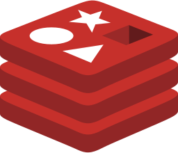
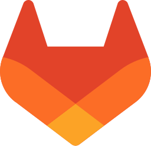

Case study · Cabify Spain · Oct 2026
Emergency Shared Vans · built in 48 hours
A rail accident closed a high-speed line for days, and the company decided to run shared vans to two airports, driven by a fleet partner. I was asked to build the product. About two days later it worked end to end: a booking web for call-centre agents, a panel for operations and the partner, a set of n8n workflows over data tables, the emails, and trips created on the ride platform with the driver already assigned. It was tested with real trips and then stopped before launch by a business decision; everything was switched off cleanly, ready to reuse.

Redis
GitLabWhat it had to do
Fixed departures to two airports and back, a few vans per shift, a flat fare per seat and free travel for anyone holding a ticket for the cancelled trains. The rules changed three times in two days, and each change had to reach the web, the panel and the emails within the hour.
- Shifts and a nightly cut-off. Departures are created ahead from templates. The evening before, a departure with too few passengers moves them to the nearest one with room, or cancels with notice.
- Never sell the same seat twice. Occupancy is always computed from the active bookings, never kept as a counter, and every booking takes a lock on its departure. Seats are held for a few minutes until the passenger confirms from the email.
- Groups stay together in one van, with one accessible space per van.
- Trips only with a driver. A trip can be created only once the partner has set the vehicle and the driver, and it is created on the ride platform with that driver pre-assigned.
How it is built
- The booking web started as a public landing page and became an internal tool for call-centre agents when the model changed to phone bookings on the third morning.
- One panel, two roles. Operations and the fleet partner sign in with a link sent to their work email, and each side sees a to-do list first: vans without a driver, trips not yet created, departures below the minimum and the waiting list.
- Emails that do the work. The passenger confirms or releases the seats from the first email, gets a reminder the day before and the vehicle and driver details before departure. Every text lives in a table.
- Safe by default. Webhooks authenticate in the node, the panel uses a short-lived token per person, requests are limited per address and every write that can collide takes a lock.
Stopping well
On the third day, with the product tested on real trips, the company decided not to launch. Switching off was designed as carefully as switching on: workflows unpublished but intact, sending set to simulation so nothing could go out by accident, the web replaced by a "not available" page, and a short guide on how to bring it back. The front end and the back end are now a base for other services.
What I learned
- Rules in tables, not in code. Fares, shifts, texts and cut-off times changed three times in two days without republishing a workflow.
- Compute occupancy, never count it. A counter drifts the first time two agents click at once; a sum over active bookings under a lock does not.
- Speed comes from reuse. The sign-in, the locks, the email layout and the ride APIs came from earlier projects, which is why two days were enough.
Described at a high level on purpose: no screenshots, workflow exports or internal figures. The diagram is illustrative.